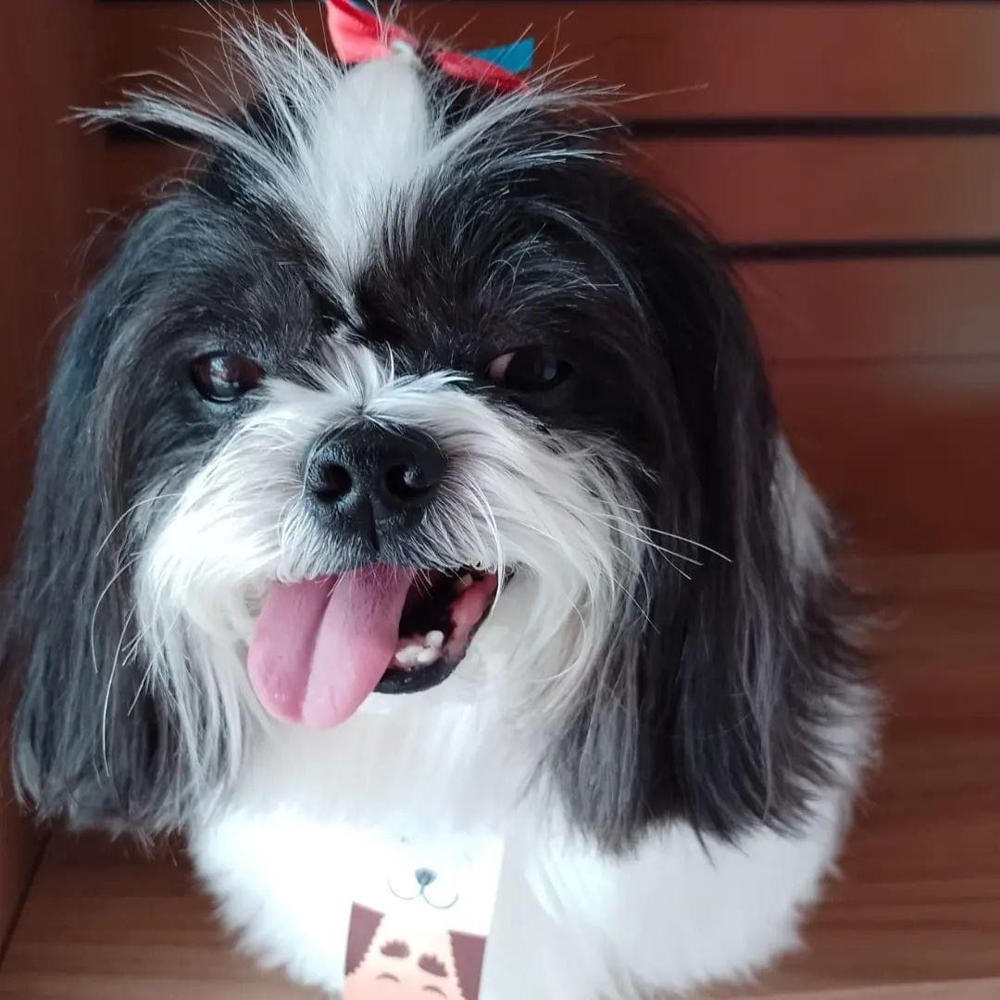

UM BANHO DE AMOR E CARINHO!
Bem-vindos a Pink PET, onde cuidamos com carinho dos seus animais de estimação. Localizado em Suzano, oferecemos serviços de banho, tosa e uma variedade de produtos para deixar seus pets felizes e saudáveis. Nossa equipe apaixonada está pronta para atendê-los e ao seu companheiro peludo. Venha nos visitar e proporcione o melhor para seu pet no Pink PET
Sobre a Tosa
Tempo de espera
 o tempo de espera normalmente, é levada em consideração a fila de clientes e o tamanho dos pets.
o tempo de espera normalmente, é levada em consideração a fila de clientes e o tamanho dos pets.
Cuidado com seu cão
cuidamos com carinho do seu querido pet, garantindo uma tosagem eficiente.
Perguntas & Respostas
?Qual o valor da tosa
O preço varia dependendo do tamanho do pet e pelagem
?Com que frequencia devo levar meu pet para o banho e tosa
Depende da raça, em geral recomenda-se banho a cada 4 a 6 semanas, mas também depende do crescimento do pelo
?Como devo preparar meu pet para o banho
É importante acostumar seu pet desde filhote, tornando o processo positivo. Escove o pelo regularmente, manipule as patas e orelhas para acostumá-lo ao toque, e recompense-o durante e após o banho
?Quais serviços estão inclusos
Possuímos serviço de leva e traz com taxi dog para maior conforto do seu pet
?Há cuidados especiais para cachorros idoso durante o banho e tosa
Sim, cachorros mais velhos podem ter necessidades específicas. Informe ao profissional sobre a idade do seu pet, condições de saúde e qualquer preocupação especial para que possam adaptar o serviço de acordo